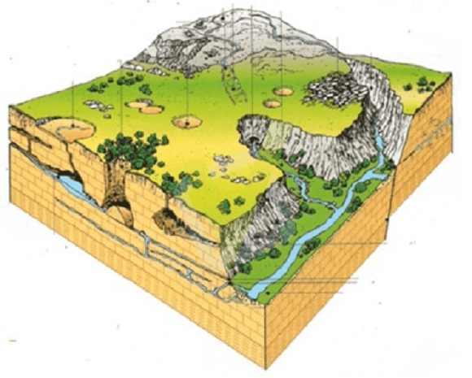
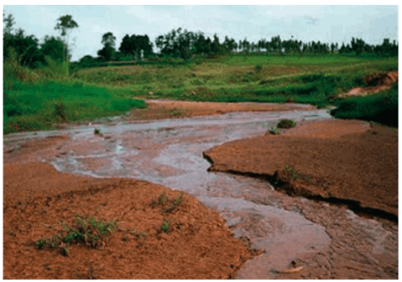

Questão 01
(UPE 2017)

As feições de relevo, observadas na parte emersa da crosta terrestre, denunciam, muitas vezes, aspectos relacionados à estrutura geológica e às condições climáticas atuais e antigas. Com relação a esse tema, observe a figura a seguir:
Se alguém perguntasse “Que tipo de rocha contribui para que se desenvolvam essas feições de relevo? ”, a resposta CORRETA seria
a) Sedimento argiloso.
b) Gnaisse.
c) Granito.
d) Calcário.
e) Quartzo.
Questão 02
(UDESC 2018) O Ciclo das Rochas é uma teia complexa de transformações da matéria, estas, às vezes, desde muito rápidas até extremamente lentas, que, em conjunto, no contexto da Tectônica de Placas, determinam modificações no reino mineral. O Ciclo das Rochas constitui um modo sintético de representar as inúmeras possibilidades pelas quais, ao longo do Tempo Geológico, um tipo de rocha pode transformar-se em outro
Fonte: Carneiro C. D. R., Gonçalves P. W., Lopes O. R. 2009. O Ciclo das Rochas na Natureza. Terra e Didática, 5(1):50-62. Disponível em http://www.ige.unicamp.br /terraedidatica/
Analise as proposições a respeito do Ciclo das Rochas:
I. A rocha, quando passa por processos intempéricos, forma camadas de materiais desagregados onde se formam os solos, processo que recebe o nome de pedogênese.
II. As rochas sedimentares são formadas pela deposição e diagênese de sedimentos provenientes de outras rochas ou de materiais de origem biogênica ou, ainda, da precipitação química de minerais.
III. As rochas metamórficas têm sua origem no resfriamento do magma, nas quais o tamanho dos cristais, geralmente, é proporcional ao tempo de resfriamento do magma: quanto mais lenta a cristalização de um magma, maiores os tamanhos dos cristais formados.
IV. O calor, a umidade, os organismos e o relevo determinam o grau de atuação de cada um dos três processos básicos de intemperismo: físico, químico e biológico.
Assinale a alternativa correta:
a) Somente as afirmativas I, II e III são verdadeiras.
b) Somente as afirmativas I, II e IV são verdadeiras.
c) Somente as afirmativas II, III e IV são verdadeiras.
d) Somente as afirmativas I, III e IV são verdadeiras.
e) Somente as afirmativas II e IV são verdadeiras.
Questão 03
Os diferentes tipos de províncias geológicas revelam as diferentes feições do relevo enquanto expressões das diferentes temporalidades que marcam o passado geológico do planeta Terra. Por seus processos formativos, as estruturas geológicas com condições mais favoráveis à formação de combustíveis fósseis são:
a) as bacias sedimentares.
b) os maciços antigos.
c) as plataformas cristalinas.
d) os dobramentos antigos.
e) os dobramentos modernos.
Comentário:
Durante o processo de diagênese (conjunto de processos químicos e físicos sofridos pelos sedimentos desde a sua deposição até a sua consolidação), constitutivo de rochas e bacias sedimentares, a matéria orgânica que se acumula pode sofrer com as condições atípicas de pressão exercida pelas inúmeras camadas de sedimentos, atuando no processo de formação dos combustíveis de origem fóssil. Por isso, é comum encontrar petróleo e fósseis em áreas de bacias sedimentares.
Questão 04
(UFN 2009) Ocorrem três tipos de estrutura geológica na crosta terrestre: escudos cristalinos, bacias sedimentares e faixas orogênicas. Portanto, conclui-se
a) Os escudos cristalinos são formados por terrenos desgastados e com baixas altitudes, devido à intensa exposição a processos erosivos.
b) A cadeia do Himalaia e a plataforma do rio São Francisco constituem exemplos de escudos cristalinos.
c) As bacias sedimentares foram formadas ao longo da era pré-cambriana.
d) As faixas orogênicas ou dobramentos antigos e modernos podem diferenciar-se apenas pela altitude.
e) Os Alpes Escandinavos representam exemplos de dobramentos modernos.
Questão 05
Assinale a alternativa que indica as formas de relevo onde predominam os processos de erosão em detrimento do acúmulo da sedimentação
a) Montanhas e planaltos.
b) Planícies e depressões.
c) Planícies e planaltos.
d) Montanhas e planícies.
e) Planaltos e depressões.
Nas montanhas e planaltos, por serem relevos mais íngremes e acidentados, predominam as ações erosivas, cuja sedimentação acumula-se majoritariamente nas áreas de depressão e planícies.
Questão 06
Sobre as formas de relevo existentes na superfície terrestre, assinale a alternativa INCORRETA:
a) Os planaltos são mais elevados que as planícies e menos do que as montanhas. Podem apresentar composições cristalinas, sedimentares e basálticas.
b) A depressão, quando abaixo do nível do mar, é chamada de absoluta, mas acima do nível do mar e abaixo da região de entorno, é chamada de relativa.
c) Nas planícies, o processo de erosão não é muito acentuado, havendo uma deposição de sedimentos em menor grau em comparação com as demais formas de relevo.
d) As cadeias montanhosas encontram-se, geralmente, nas mais recentes formações geológicas.
a) Correta – Os planaltos são mais altos e mais acidentados que as planícies e menos do que as cadeias montanhosas. Os planaltos cristalinos são formados por rochas ígneas intrusivas e metamórficas, os sedimentares são compostos por rochas sedimentares e os basálticos, por rochas ígneas extrusivas.
b) Correta – As depressões são divididas em absolutas, quando em comparação ao nível do mar, e relativas, quando em comparação com a região próxima.
c) Incorreta – Nas planícies, os processos erosivos são proeminentes, a sedimentação e o acúmulo de sedimentos são constantes.
d) Correta – As cadeias de montanhas são consideradas formas de relevo geologicamente recentes, cuja formação ocorreu na era Cenozoica do período Terciário
Questão 07
O solo é um componente terrestre essencial para os seres vivos e também para a realização das atividades econômicas, de forma a ser considerado um importante recurso natural. Em termos de composição geomorfológica, pode-se afirmar que os solos
a) constituem-se em ambientes de erosão e acúmulo de material sedimentar
b) consolidam-se a partir de fatores exógenos do relevo.
c) são o ponto de partida para a formação de todas as rochas terrestres.
d) têm como característica a alteração mineralógica a partir da pressão do ar.
e) apresentam uma maior fertilidade quando livres de compostos orgânicos.
Questão 08
(UPE 2013) Observa-se, na figura a seguir, um problema ambiental que decorre, indiretamente e sobretudo, das ações antrópicas sobre a natureza. Examine a fotografia e depois assinale a alternativa que apresenta esse problema.

a) Formação de voçorocas.
b) Assoreamento.
c) Inserir alternativa.
d) Laterização de leito fluvial.
e) Movimentos de massa rápidos.
Questão 09
(PUC-RS) Para resolver a questão, leia o texto a seguir, sobre fontes de energia, e selecione as palavras/expressões que preenchem correta e coerentemente as lacunas.
O _________ foi importante fonte de energia para a Primeira Revolução Industrial. Atualmente as maiores reservas estão localizadas no hemisfério _______. É um dos principais responsáveis pela __________, pois sua queima libera grande quantidade de óxido de enxofre na atmosfera.
a) carvão mineral – norte – chuva ácida.
b) petróleo – sul – poluição dos oceanos.
c) petróleo – sul – chuva ácida.
d) carvão mineral – sul – poluição dos oceanos.
e) petróleo – norte – chuva ácida.
Questão 10
As reservas petrolíferas estão relacionadas a um tipo de formação geológica. Indique, corretamente, esse tipo de formação.
a) Escudos cristalinos.
b) Bacias sedimentares.
c) Dobramentos cenozoicos.
d) Placas tectônicas.
e) Aluviões quaternários.
a) Falso – Essa formação geológica se originou no período Pré-Cambriano. Nela, é possível extrair minerais como o ferro e o manganês.
b) Verdadeiro – São regiões que apresentam formações geológicas sedimentares. Nos terrenos formados durante a era Mesozoica é possível encontrar depósitos petrolíferos.
c) Falso – Essa formação geológica não contém petróleo.
d) Falso – Placas tectônicas são gigantescos blocos que compõem a camada sólida externa da Terra. Esses blocos não possuem relação direta com a existência de petróleo.
e) Falso – Aluvião é um depósito de sedimentos clásticos (areia, cascalho ou lama). Essa formação geológica não abriga campos petrolíferos. Nela é possível encontrar cascalho fino.